安装 —— Windows 环境搭建推荐教程
一、系统约定
环境软件下载后存放位置：X:\Server_Tools
环境软件安装位置：X:\Server_Core
PHP安装位置：X:\Server_Core\PHP
MySQL安装位置：X:\Server_Core\MySQL
Zend Optimizer安装位置：X:\Server_Core\Zend
IIS网站站点根目录：X:\wwwroot
MySQL 数据库位置：X:\Database
Php.ini存放位置：X:\Windows\php.ini
My.ini 存放位置：X:\Server_Core\MySQL\my.ini
二、系统环境检查以及准备所需软件
1. 检查系统是否已安装IIS
单击："开始"－"管理工具"，检查是否存在" Internet 信息服务(IIS)管理器 "
2. 查看磁盘分区容量并确定使用策略
打开"我的电脑"，查看除 C 区外各个磁盘分区的可用空间容量，使用容量较大的磁盘分区作为 WEB 根目录，且 MySQL 数据库存储目录(Database)，尽量不要与 WEB 根目录同在一个磁盘分区内。较小的磁盘分区可以作为服务环境软件的安装目录分区。
3. 下载环境软件
将所有软件均下载存放于Server_Tools文件夹中。
MySQL-essential-5.0.45-win32.msi
php-5.2.4-Win32.zip
ZendOptimizer-3.3.0-Windows-i386.exe
三、环境部署
1．安装MySQL
(1) 安装软件
进入 X:\Server_Tools 文件夹，双击 MySQL-essential-5.0.45-win32.msi ；如下图所示：
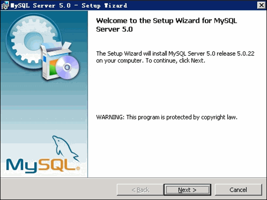
选择 Custom 自定义安装，如下图所示：
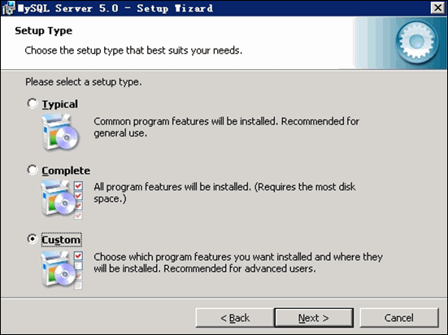
点击"Change"更改 MySQL 安装目录，如下图所示：
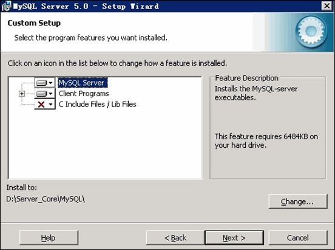
待文件复制安装完毕后，进行 MySQL 设置界面，单击 Finish 。如下图所示：
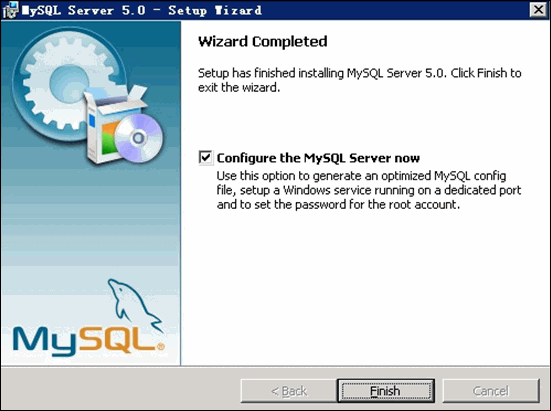
选择 Detailed Configuration 进行详细配置，如下图所示：
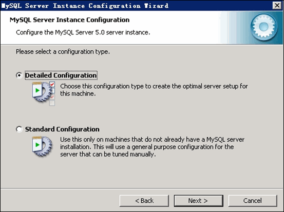
选择 MySQL 运行模式：Server Machine 如下图所示：
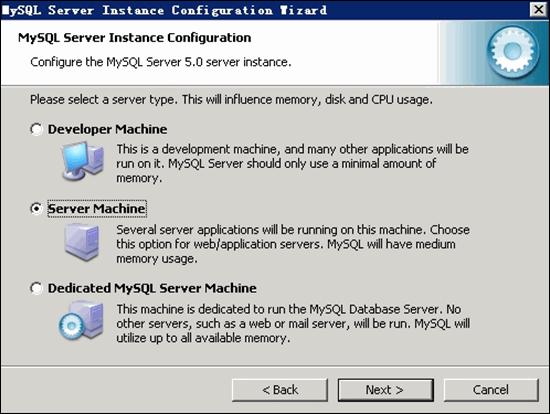
选择 MySQL 数据库默认存储方式：Non-Trans Only ( MYISAM) 如下图所示：
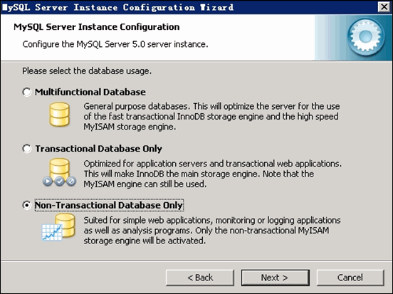
设定 MySQL 最大连接数：一般设置为 128 - 512 之间的整数。如下图所示：
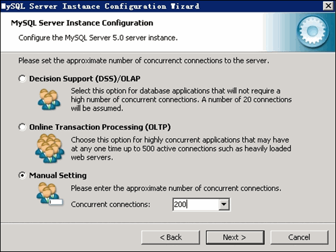
设定 MySQL 网络参数，注意：不要启用 Strict Mode！ 如下图所示：
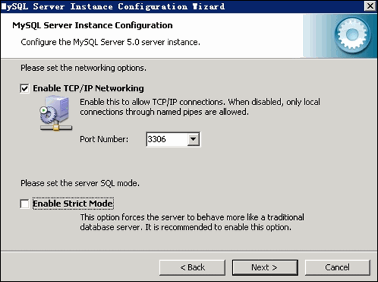
设定 MySQL 默认字符集：以用户站点语言为准。如下图所示：
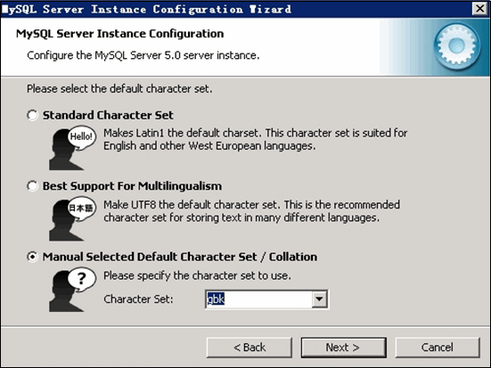
Windows 环境设定，如下图所示：
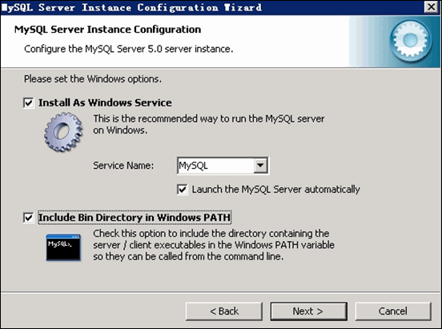
修改设定 root 用户密码，注意：不要启动远程连接模式！ 如下图所示：
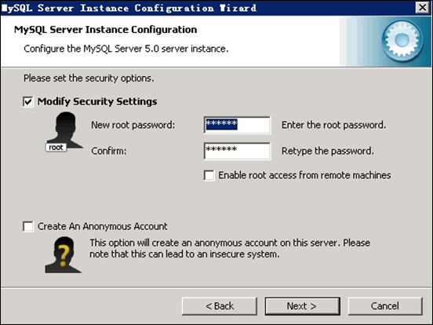
完成 MySQL 的安装，并启动 MySQL 服务。如下图所示：
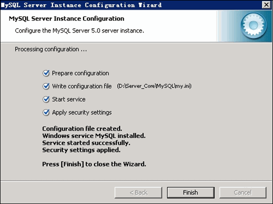
(2) 测试 MySQL 工作是否正常。
打开 cmd 命令提示符窗口，输入命令：MySQL –u root –p
输入密码后，如果能够正常进入 MySQL 控制台则说明 MySQL 安装正常。
(3) 更改 MySQL 数据库目录
a) 打开 cmd 命令提示符窗口，输入命令：net stop MySQL 停止 MySQL 服务运行；
b) 打开X:\Server_Core\MySQL\my.ini
找到：
Datadir = "X:\Server_Core\MySQL\data"
修改为：
Datadir = "X:\Database"
c) 将 X:\Server_Core\MySQL\data 文件夹复制到 X:\ ，并重命名为X:\Database；
d) 打开 cmd 命令提示符窗口，输入命令：net start MySQL 启动 MySQL 服务。
e) 重新测试 MySQL 是否工作正常。
(4) 准备 LibMySQL 动态链接库
将 X:\Server_Core\MySQL\bin\libMySQL.dll 文件复制到 C:\Windows\System32 。
-----------------------------------------------------------------------------------------------------------------------------------------------------------------------------
2. 安装 PHP
(1) 解压缩下载的 php-5.2.4-Win32.zip 文件，并将其复制到：X:\Server_Core\PHP ；
(2) 进入 X:\Server_Core\PHP 文件夹，将 php.ini-dist 重命名为 php.ini ；
(3) 打开 php.ini 文件，找到：extension_dir = "./"
将其改为；
extension_dir = "X:\Server_Core\PHP\ext"
(4) 找到：Windows Extensions
在 Windows Extensions 下方的动态模块配置中，需要打开以下模块支持：（去掉模块配置每行前面的；号即可）
extension=php_mbstring.dll
extension=php_gd2.dll
extension=php_MySQL.dll
extension=php_curl.dll
extension=php_xmlrpc.dll
extension= php_mysqli.dll
(5) 找到：
disable_functions =
改为：
disable_functions = phpinfo,passthru,exec,system,chroot,scandir,chgrp,chown,shell_exec,proc_open,proc_get_status,ini_alter,ini_alter,ini_restore,dl,pfsockopen,openlog,syslog,readlink,symlink,popepassthru,stream_socket_server
(6) 保存 php.ini 文件，并将其复制到 C:\Windows\
------------------------------------------------------------------------------------------------------------------------------------------------------------------
1. 添加应用程序池
2. 添加isapi和cgi限制

3. 添加isapi筛选器
4. 添加脚本映射
5. 测试(之前已经创建了phpinfo.php) 跟之前一样 打开localhost/phpinfo.php 查看效果：
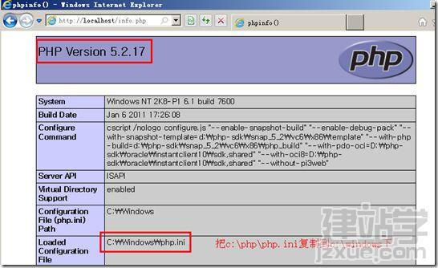-----------------------------------------------------------------------------------------------------------------------------------------------------------------------------
配置phpmyadmin
第一步：下载phpmyadmin
到天空软件站下载phpmyadmin，地址：http://tele.skycn.com/index.html，搜索phpmyadmin即可出现最新更新的phpmyadmin版本，建议使用多国语言版，这样才出现简体中文字符。
第二步：本地配置phpmyadmin
把下载回来的phpmyadmin解压出来，并将解压出来的此文件夹改名为phpmyadmin，然后定位到此文件夹的/phpmyadmin/libraries下的config.default.php，把它复制到/phpmyadmin并重命名为config.inc.php
用记事本打开config.inc.php，编辑--查找...
查找$cfg['PmaAbsoluteUri'] = '';
将其改成
$cfg['PmaAbsoluteUri'] = 'http://localhost/phpmyadmin';
[也就是您的网站服务的IP或域名加上你的phpmyadmin的文件夹名]
查找$cfg['Servers'][$i]['auth_type'] = 'config';
把config改成 http，即
$cfg['Servers'][$i]['auth_type'] = 'http';
[改成http后，就可以像登录路由器那样，出现一个登录对话框]
保存退出。
-----------------------------------------------------------------------------------------------------
一、下载适合自己 Discuz! 7.2 版本到本地或服务器
下载地址：http://download.x876.com/discuz/7.2.0/
说明：官方提供了 4 种不同的编码。包括 GBK 简体中文版(推荐)、UTF-8 简体中文版、BIG5 繁体中文版(推荐)、UTF-8 繁体中文版。如果您的站点主要是国内会员，推荐您使用 GBK 版本。
二、解压并上传论坛程序到服务器且修改相应目录权限
1、上传论坛程序到服务器上
本次演示以 GBK 字符集版本为例（其他字符集版本的也参照此教程方法来安装），解压缩得到如下图所示的三个文件夹：
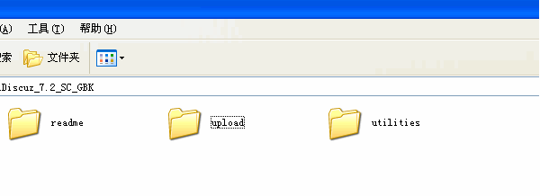
upload 这个目录下面的所有文件是我们需要上传到服务器上的可用程序文件；
readme 目录为产品介绍、授权、安装、升级、转换以及版本更新日志说明；
utilities 目录为论坛附带工具，包括升级程序和 Tools 工具箱。
将其中 upload 目录下的所有文件使用 FTP 软件以二进制方式（常见 FTP 软件二进制的设置方法http://faq.comsenz.com/viewnews-373）上传到空间（以下截图中使用的 FTP 软件为 FlashFXP，有关此工具的使用教程详见：FTP 使用教程），如下图所示：
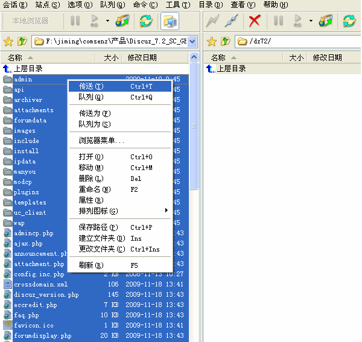
2、设置相关目录的文件属性，以便数据文件可以被程序正确读写
使用 FTP 软件登录您的服务器，将服务器上以下目录、以及该目录下面的所有文件的属性设置为 777，Win 主机请设置 internet 来宾帐户可读写属性。
./config.inc.php
./attachments
./forumdata
./forumdata/cache
./forumdata/templates
./forumdata/threadcaches
./forumdata/logs
./uc_client/data/cache
关于目录权限修改可以参考：http://faq.comsenz.com/viewnews-183
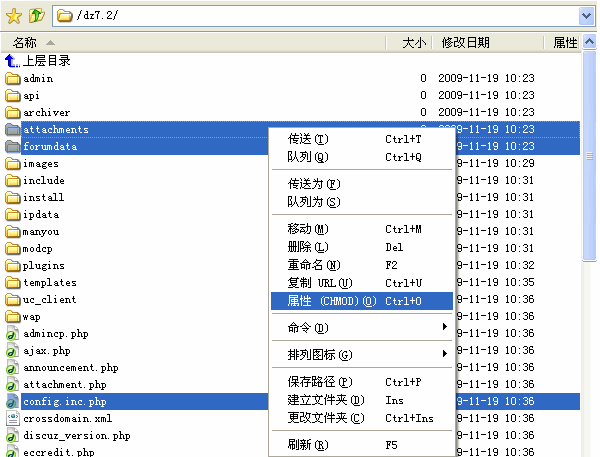
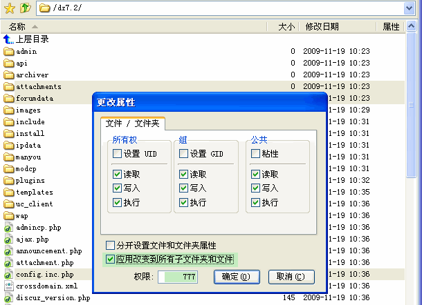
三、安装过程
上传完毕后，开始在浏览器中安装 Discuz! 7.2 ，登录 UCenter 1.5 => 应用管理 => 添加新应用 => URL 安装 (推荐)：
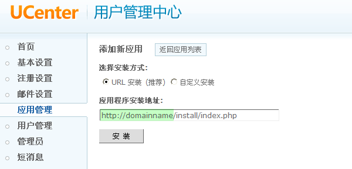
用你的网站域名替换“应用程序安装地址”中的 “http://domainname”部分，然后点击“安装”进入准备安装界面：
阅读授权协议后点击“我同意”，系统会自动检查环境及文件目录权限，如下图所示：
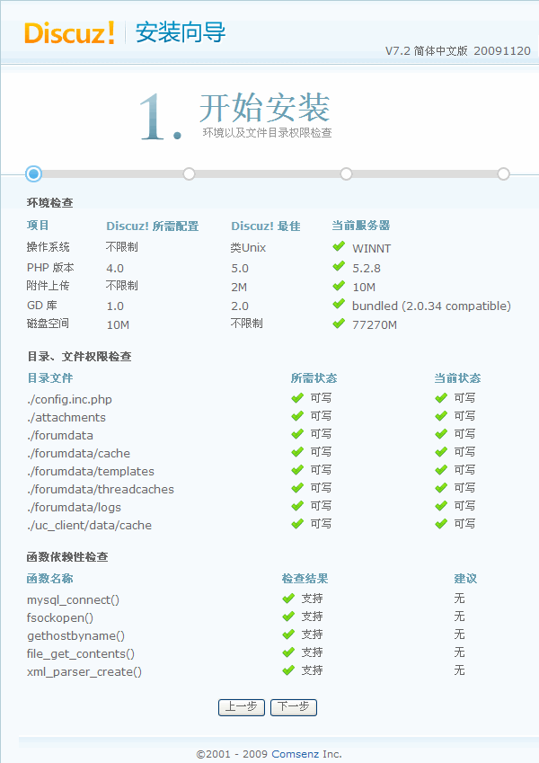
检测成功，点击“下一步”，即进入检测服务器环境以及设置 UCenter 界面，如下图所示：
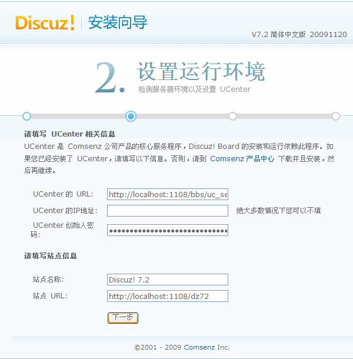
这里会自动获取 UCenter 信息，所以无需手动配置，直接点击“下一步”进入数据库信息配置界面：
填写好 Discuz! 数据库信息及管理员信息后，点击“下一步”，系统会自动安装数据库直至完毕，如下图所示：
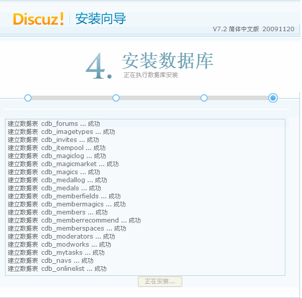
安装成功后，点击“进入下一步填写联系方式”，会出现如下的界面：
填写好联系方式后点击“提交”，也可以点击“跳过本步”直接完成安装。
安装完毕后进入 Discuz! 7.2 首页查看网站：
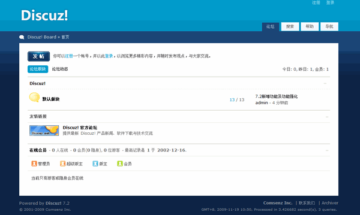
至此，Discuz! 7.2 已经成功地安装完毕！您可以登录 Discuz! 7.2 站点并开始设置了。